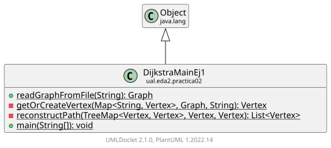

Class DijkstraMainEj1
java.lang.Object
ual.eda2.practica02.DijkstraMainEj1

-
Constructor Summary
Constructors -
Method Summary
Modifier and TypeMethodDescriptionprivate static VertexHelper method to get an existing vertex or create a new one if neededstatic voidMétodo principal para probar el algoritmostatic GraphreadGraphFromFile(String filePath) Reads a graph from a text file.Reconstructs the shortest path from source to destination using the predecessor map
-
Constructor Details
-
DijkstraMainEj1
public DijkstraMainEj1()
-
-
Method Details
-
readGraphFromFile
Reads a graph from a text file.- Parameters:
filePath- The path to the text file- Returns:
- A Graph object constructed from the file data
- Throws:
IOException- If an I/O error occurs
-
getOrCreateVertex
-
reconstructPath
private static List<Vertex> reconstructPath(TreeMap<Vertex, Vertex> pred, Vertex source, Vertex destination) Reconstructs the shortest path from source to destination using the predecessor map- Parameters:
pred- The predecessor map from Dijkstra's algorithmsource- The source vertexdestination- The destination vertex- Returns:
- A list of vertices representing the path from source to destination
-
main
Método principal para probar el algoritmo
-